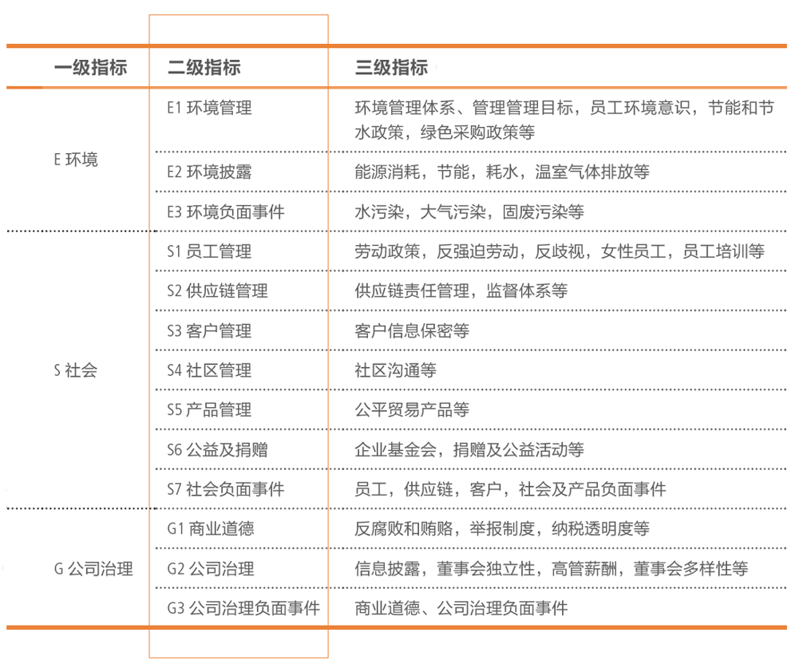
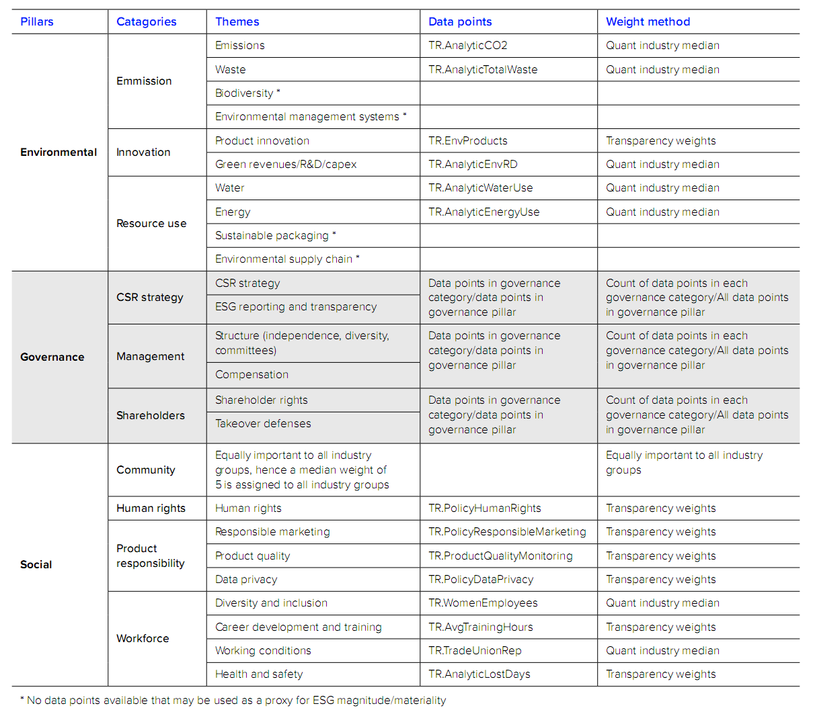
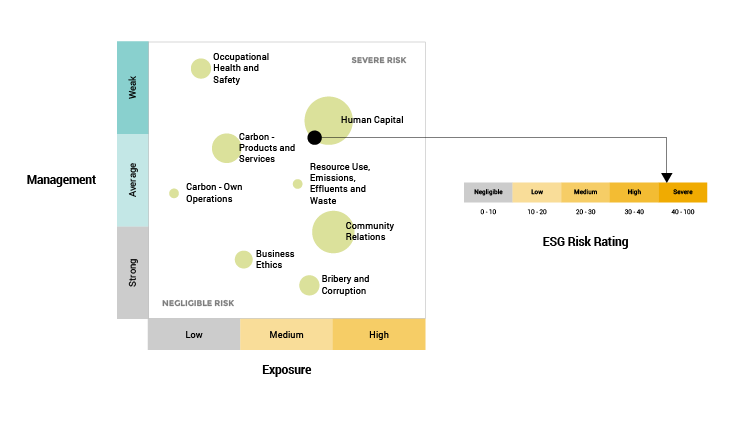

# ESG 评级
ESG评级，意即第三方机构对一家公司的ESG所披露的信息及表现进行打分评级。本文介绍较为常见的ESG评级，大概分为：
- 专业数据公司评级，包括道琼斯、MSCI、富时罗素、恒生以及商道融绿等
- NGO背景国际组织评级，包括CDP等
本文更新于2020年5月
# 道琼斯可持续发展指数
# 简介
- 道 · 琼斯可持续发展指数（DJSI）自1999年起，每年邀请全球前10%的企业，从经济、环境和社会标准三个维度对企业进行包括ESG在内的可持续发展能力全面评估。
- 成份股公司可以使用DJSI指数系列的标识，作为企业在可持续发展方面的成就；使用权将每年更新。 此外， DJSI领袖企业可入选SAM可持续发展年鉴，获得金奖、银奖、铜奖等荣誉；没有进入指数但取得重要进步的企业也有机会入选其中，获得可持续发展年鉴成员(Sustainability Yearbook Member)荣誉。
- 2019年，DJSI新兴市场可持续发展指数成分股中，中国企业仅中国光大国际与平安保险入选。
# 指数包括
- 道琼斯可持续发展指数系列可划分为三个类别
- 全球类可持续发展指数（包括环球指数、新兴市场指数等）
- 区域类可持续发展指数（包括亚太指数、欧洲指数、北美指数等）
- 国家类可持续发展指数（包括澳大利亚指数、加拿大指数、韩国指数等）
- 此外还包括部分蓝筹指数，如道琼斯全球可持续发展80指数、道琼斯亚太地区可持续发展40指数、道琼斯美国可持续发展40指数等。
# 编制与评估
- 编制机构：标普道琼斯指数有限公司
- 评估机构：可持续资产管理公司 RobecoSAM
# 方法
- 选取59个行业内排名前10%的公司，覆盖全球市值最高的3000家企业
- 包括全球类可持续发展指数、区域可持续发展指数、国家可持续发展指数等指数产品
- 问卷采集+抓取公开信息
- 经济、环境、社会三个维度，问题数量、标准和权重因行业不同而不同（各个行业的问卷和标准非未公开资料）
- 评估频率：每年一次
- 评估范围：仅向全球上市企业中市值位居前25%的企业发出问卷
- 评估维度：问卷覆盖经济、环境与社会范畴共24项议题的逾百项指标
- 信息来源：公开与非公开信息
# CDP
# 简介
- 英国碳信息披露项目 (Carbon Disclosure Project，CDP）成立于2000年、总部位于英国，每年都会要求世界上的大企业公开碳排放信息及为气候变化所采取措施的细节，已发展成为碳排放披露方法论和企业流程的经典标准。
# 编制与评估
- 编制与评估：CDP（关注企业在气候变化、水、森林方面的表现）
# 方法
- 应投资机构要求对公司发出环境信息披露的要求
- 问卷覆盖气候变化、水安全及森林范畴
- 问卷采集
- 评估频率：每年一次
- 三类问卷（气候变化、森林、水）
- 阶段分为
- CDP向公司发放问卷收集数据
- 投资机构向CDP购买数据
# 评分体系
CDP等级从高到低分为A、B、C、D四个等级，并用+号调整。
- D 披露——主要衡量问卷的完成度；
- C 认知——目的是衡量企业对于环境问题的认知程度以及评估程度；
- B管理——衡量企业为应对环境问题实施政策和战略以及实际应对措施的程度；
- A 领导力——关注企业是否采取了能够代表产业内最佳实践的行动。
# 应用
CDP数据在指数市场有大量应用
- 包括但不限于
- MSCI low Carbon Index
- FTSE CDP Carbon Strategy Index
- BNEF Global Corporate Renewable Energy Index
- Dow Jones Susstainability Index
- FTSE4Good Index
- Ned Bank Green Index
- Bombay Stock Exchange Carbon Index
- Korea Exchange - KRX SRI Index
- Istanbul Stock Exchange Sustainability Index
- S&P/IFC Carbon Efficient Index
# CDP指标体系
来源于《2018 CDP China Report》，每年有变化
- CDP 根据国际最新标准及业界最佳实践，发展出三套主题问卷—气候变化、水安全及森林，并开发相应的回复指南与评分方法学。
- 2018 年 CDP 将三种主题问卷的架构进一步整合，每份主题问卷皆涵盖以下主要部分：
- 公司介绍：介绍公司
- 公司治理及政策：描述谁具备管理环境绩效的责任，并讨论企业内部或对外环境政策
- 风险及机遇：识别风险、机遇以及连带的财务影响
- 战略及情景分析：讨论风险管理如何纳入商业战略以及如何使用情景分析
- 目标及行动：提供环境香港定性及定量目标，以及达到此目标的进程
- 沟通合作：讨论公司与客户、供应商及价值链伙伴等利害相关方的沟通合作程度
- 绩效指标及第三方核证：提供环境影响量化数据、测量数据的计算方法以及是否有第三方核证
# 现状
- 2018 年CDP代表 656 家投资机构以及115 家采购机构收集问卷，并收到全球共 7,000 余家企业回复。
- 中国企业响应CDP环境披露的数量持续增长。 2018 年，在中国大陆样本中通过CDP向投资者披露的企业共29家。除了向投资者报告的上市公司之外，将近 600 家中国企业，以供应商身份向客户提交回复。
# 恒生可持续发展企业指数系列
# 简介
- 2010年7月，恒生指数公司首度推出了恒生可持续发展企业指数系列；
- 2019年5月，恒生指数公司推出了恒指ESG指数和恒生国指ESG指数，为关注ESG的投资者提供更多参考基准。
- 恒生指数分为基准指数和交易指数。截至2019年，指数系列包括：针对香港上市的有，恒指ESG指数、恒生国指ESG指数、恒生可持续发展企业指数、恒生A股可持续发展企业指数；针对内地上市的有 恒生A股可持续发展企业基准指数、恒生A股可持续发展企业指数，以及跨市场的恒生内地及香港可持续发展企业指数。
# 编制与评估
- 编制机构：恒生指数有限公司
- 评估机构：香港品质保证局
# 方法
- ESG评分最高的30只证券被纳入恒生可持续发展企业指数
- 包括恒恒生可持续发展企业指数、恒生A股可持续发展企业指数等指数产品
- 香港品质保证局进行评级
- 涉及企业管治、人权、劳动实务、环境、公平营运、消费者议题、社区参与和发展等7项核心指标
# MSCI
MSCI 是 Morgan Stanley Capital International 的缩写
# 历史
- 2018年6月，A股将正式纳入MSCI新兴市场指数和MSCI全球指数。MSCI承诺将对所有纳入MSCI指数的231家上市公司进行ESG研究和评级。
- 2019年6月，MSCI宣布将分三个阶段将提升现有的中国A股纳入因子，从5％增加至20％（2019年底）。
# 分类
- MSCI ESG指数旨在帮助机构投资者更有效地衡量ESG投资业绩。MSCI根据其ESG评级结果，开发了多种ESG指数产品。
- MSCI 的ESG指数产品体系有三类：
- 第一类，INTEGRATION：整合包括： ESG行业领先者、 ESG关注策略、ESG广泛策略等
- 第二类，VALUE：价值观的体现包括：负责任投资等
- 第三类，IMPACT：影响力投资
# 方法
- 对纳入指数的公司开展ESG评级
- 通过不同的纳入策略产生不同的指数产品，包括ESG Universal（广泛）、ESG Leaders（行业领先者）、ESG focus（关注）策略等
- 抓取公开信息
- ESG三个层面，10大主题共计37项ESG议题
- MSCI评级周期：每年一次
- 数据更新时间：全年任意时间
- MSCI与公司沟通原则：独立性、一致性和透明性
- MSCI数据来源
- 100+数据库（政府、NGO等）
- 公司披露文件（10-K 、ESG报告、年报等）
- 2,100+媒体资源
# 评级结果
可参考： Executive Summary MSCI ESG Ratings Methodology
- MSCI关键议题加权得分，总分经过行业调整，落入ESG字母评级某一档
- 评级等级从“AAA”（最高）至“CCC”（最低）分为七个等级
- CCC、B等级——LAGGARD：落后水平
- BB、BBB、A等级——AVERAGE：平均水平
- AA、AAA等级——LEADER：领先水平
# 评级议题
MSCI ESG评级关注37项ESG关键议题，涉及污染和排放、人力资本、数据安全、商业伦理等；不同行业选择不同的关键议题进行打分，并对各个议题从上市公司的风险暴露和风险管理两方面打分。
- 环境
- 气候变化
- 自然资本
- 环境机会
- 社会
- 人力资本
- 产品责任
- 利益相关方的反对
- 社会机会
- 经济
- 公司治理
- 公司行为
# 在中国现状（2019）
- 2019年，中国企业评级结果稳中有升， CHINA指数与CHINA A指数企业评级处于最末端的企业数均有减少。
- CHINA指数和CHINA A指数中的企业仍有超过55%的企业ESG评级处于最末的CCC和B级。
# 富时罗素
# 简介
- 富时社会责任指数系列是首个度量符合全球公认企业责任标准的公司表现的指数系列，由富时全球股票指数系列衍生而来。包括FTSE4Good Developed Index（发达市场富时社会责任指数）、FTSE4Good Emerging Index（新兴市场富时社会责任指数）等。
- 富时ESG指数系列旨在帮助投资者将ESG目标纳入广泛的投资标准，同时保持行业中立性。富时罗素ESG指数系列包括FTSE Developed ESG Index、FTSE Emerging ESG Index、FTSE All-Share ESG Index、Russell 1000ESG Index等。
- 抓取公开信息
- 14项ESG议题
# 编制与评估
- 编制：富时罗素 （FTSE Russell）
# 纳入规则
- 选择标准一：排除煤炭、军工等特定行业公司
- 指数将排除以下企业：
- 有争议武器（CW）排除清单：包括为杀伤人员地雷，集束弹药，化学和生物武器制造或提供特定部件的公司。有争议的武器（CW）排除将在3月和9月每半年审查一次。
- 联合国争议排除清单包括可能违反联合国全球契约（UNGC）原则的公司。 这些原则分为四类;人权，劳工，环境与反腐败。
- 选择标准二：根据ESG评级结果纳入或剔除
- 计算ESG评分，将ESG评分转化为ESG指数权重，经各行业权重调整后形成指数。
# 评级议题：
- 评级框架由研究领域中每个公司的四个层级数据组成，包括企业ESG整体评分、环境、社会、公司治理三大核心内容、相应的14项的主题评价及300多项独立的考察指标。
- 14个主题评价中，每个主题包含10到35个指标。富时罗素ESG评级根据14项主题评价，每家企业平均应用125个指标，仅使用公开资料（包括公司季报、和企业社会责任报告等、强制性会计披露，监管文件，证券交易所，非政府组织和媒体），富时与每家企业单独联系，以检查是否已找到所有相关的公开信息。
- 环境
- 生物多样性
- 气候变化
- 污染排放和资源利用
- 公司供应链情况
- 水资源的使用
- 社会
- 客户责任
- 产品健康与安全
- 人权及团队建设
- 劳动标准
- 供应链
- 经济
- 反腐败
- 企业管理
- 风险管理
- 纳税透明度
- 环境
# 商道融绿
# 编制与评估
# 简介
- 运用融绿ESG评估系统对A股300家最具代表性上市公司的ESG绩效进行评估
- 选取ESG绩效排名前50位的上市公司形成融绿-财新ESG美好50指数
- 抓取公开信息
- 13个ESG二级指标，三级指标包括52个通用标与75个行业指标

# 汤森路透（Refinitiv）
路孚特（Refinitiv，原汤森路透金融与风险业务部门）披露了其2020年的ESG评级的方法论 (opens new window)。
其中，对于ESG议题的定义非常值得参考。

# 更多
很明显，不同机构对同一公司的评级体系的各不相同，很容易会导致其结果的不同。不同指数产品有不同的侧重点与关注点。
若以结果为出发点，请关注以下问题：
- ESG指数评级的目的是为什么？
- 所选择的指数评级不同，应根据目的来进行甄别，如吸引投资者的话应选择哪个，这个需要决策层定夺；
- 详细、公开的信息披露是ESG评级的基础，做到这一点之后，其他才能纷至沓来；
- 可依托第三方专业机构提供深入和具体的指数分析和解读服务。
# EcoVadis CSR评级
EcoVadis按照ISO26000社会责任指南评估供应商的表现，得出一系列结果，并供一些企业以评价其供应商的环境和社会责任水平。
其评级涵盖四大主题（环境、劳工与人权、道德、可持续采购）的21条企业社会责任标准。
# ISS ESG (opens new window)
Institutional Shareholder Services Inc. (ISS) is a proxy advisory firm. Hedge funds, mutual funds and similar organizations that own shares of multiple companies pay ISS to advise (and often vote their shares) regarding share holder votes. It is the largest such firm, with over 61 percent of the business. (via wikipedia (opens new window))
ISS评级被视为行业最高质量指标之一，它分析了一家公司对ESG的管理相关事务，分析是建立在多达100个项目的严格标准基础上的。这些标准不断得到审查和发展，以符合最新的科学发现、技术发展、监管变化和社会辩论。
# Sustainalytics
Sustainalytics' ESG Risk Ratings offer investors a distinct risk signal and deep insights into why certain ESG issues are considered material for a company and how well a company is managing those risks.
Sustainalytics' ESG Risk Ratings combine the concepts of management and exposure to arrive at an assessment of ESG risk that is comparable across all industries. With the risk assessments being absolute rather than relative to a group of peers, investors have a clear lens into a company's performance relative to any other company in any subindustry or region.

# Fitch Ratings (惠譽國際)
惠誉国际在新闻稿中提出：
惠誉的分析团队建立了新的ESG相关性评分（ESG Relevance Scores），显示了ESG因素在评级决策中的相关和重要性。
在其ESG页面 (opens new window)，暂没有评分的标准或更多资料。